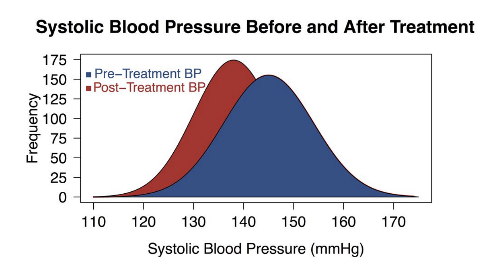
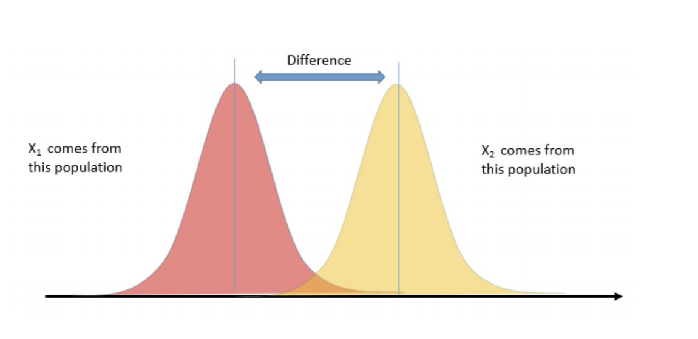
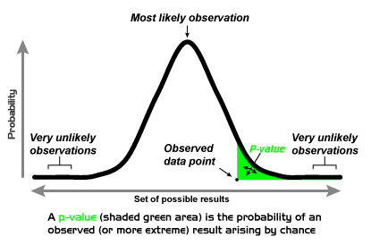
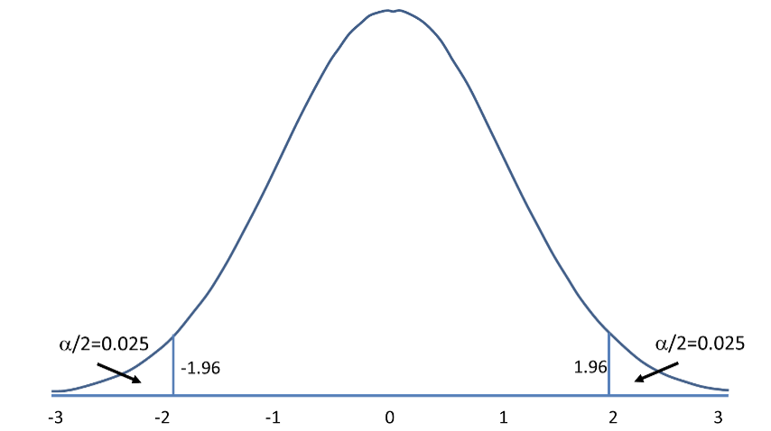
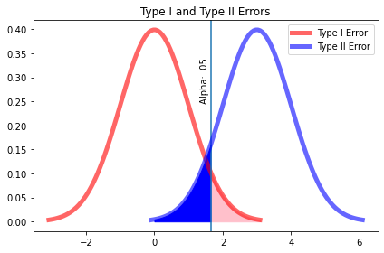
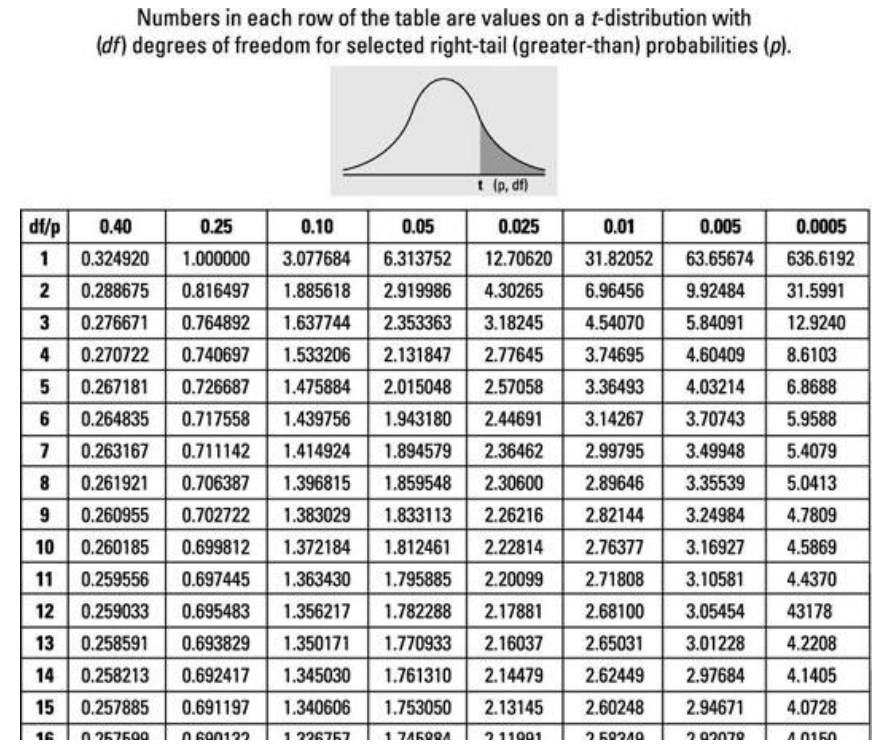

Hypothesis Testing#
from scipy import stats
import numpy as np
import seaborn as sns
import matplotlib.pyplot as plt
Agenda#
SWBAT:
describe the basic framework and vocabulary for hypothesis testing;
define Null and Alternative Hypotheses;
define p-value, alpha, Type 1 and Type 2 Errors;
perform z-tests;
perform t-tests
Scenarios#
Chemistry - do inputs from two different barley fields produce different yields?
Astrophysics - do star systems with near-orbiting gas giants have hotter stars?
Medicine - BMI vs. Hypertension, etc.
Business - which ad is more effective given engagement?


Basic framework and assumptions for hypothesis testing#
High-Level Hypothesis Testing#
Start with a Scientific Question (yes/no)
Take the skeptical stance (null hypothesis)
State the complement (alternative)
Set a threshold for errors
Create a model (test statistic) of the situation assuming the null hypothesis is true
Decide whether or not to reject the null hypothesis
Intuition
Suppose you have a large dataset for a population. The data is normally distributed with mean 0 and standard deviation 1.
Along comes a new sample with a sample mean of 2.9.
The idea behind hypothesis testing is a desire to quantify our belief as to whether our sample of observations came from the same population as the original dataset.
According to the empirical (68–95–99.7) rule for normal distributions there is only roughly a 0.003 chance that the sample came from the same population, because it is roughly 3 standard deviations above the mean.

To formalize this intuition, we define a threshold value for deciding whether we believe that the sample is from the same underlying population or not. This threshold is \(\alpha\), the significance threshold.
This serves as the foundation for hypothesis testing where we will reject or fail to reject the null hypothesis.
Define Null and Alternative Hypotheses#
The Null Hypothesis#
 There is NOTHING, no difference.
There is NOTHING, no difference.
If we’re testing the function of a new drug, then the null hypothesis will say that the drug has no effect on patients, or anyway no effect relative to relief of the malady the drug was designed to combat.
If we’re testing whether Peeps cause dementia, then the null hypothesis will say that there is no correlation between Peeps consumption and rate of dementia development.
The alternative hypothesis says the opposite of the null hypothesis.
One-tailed vs. two-tailed tests#


Two Tail Hypothesis#
\(\Large H_0: \bar{x} - \mu_p = 0 \)
\(\Large H_1: \bar{x} - \mu_p \neq 0 \)
Left Tail Hypothesis#
\(\Large H_0: \bar{x} >= \mu_p \)
\(\Large H_1: \bar{x} < \mu_p \)
Right Tail Hypothesis#
\(\Large H_0: \bar{x} <= \mu_p \)
\(\Large H_1: \bar{x} > \mu_p \)
Let’s write the appropriate hypotheses#
A drug manufacturer claims that a drug increases memory. It designs an experiment where both control and experimental groups are shown a series of images, and records the number of correct recollections until an error is made for each group.
Answer:
Null: People who took the drug don’t have more correct recollections than people who didn’t take the drug.
Alternative: People who took the drug do have more correct recollections than people who didn’t take the drug.
An online toystore claims that putting a 5 minute timer on the checkout page of its website decreases conversion rate. It sets up two versions of its site, one with a timer and one with no timer.
Answer:
The Kansas City public school system wants to test whether the scores of students who take standardized tests under the supervision of teachers differ from the scores of students who take them in rooms with school administrators.
Answer:
A pest control company believes that the length of cockroach legs in colonies which have persisted after two or more insecticide treatements are longer than those in which have not been treated with insecticide.
Answer:
A healthcare company believes patients between the ages of 18 and 25 participate in annual checkups less than all other age groups.
Answer:
\(p\)-value, \(\alpha\), Type I/II errors#
\(p\)-Values#
The basic idea of a \(p\)-value is to quantify the probability that the results seen are in fact the result of mere random chance. This is connected with the null hypothesis: If the null hypothesis is true and there is no significant correlation between the population variables X and Y, then of course any correlation between X and Y observed in our sample would have to be the result of mere random chance.
How Unlikely Is Too Unlikely?
\(\alpha\)#
Suppose we calculate a \(p\)-value for some statistic we’ve measured (more on this below!) and we get a \(p\)-value of 20%. This would mean that there is a 20% chance that the results we observed were the result of mere random chance. Probably this is high enough that we ought not to reject the null hypothesis that our variables are uncorrelated.
In practice, a \(p\)-value threshold (\(\Large \alpha\)) of 5% is very often the default value for these tests of statistical significance. Thus, if it is calculated that the chance that the results we observed were actually the result of randomness is less than 1 in 20, then we would reject the null hypothesis and accept the alternative hypothesis.
If \(p \lt \alpha\), we reject the null hypothesis.:
If \(p \geq \alpha\), we fail to reject the null hypothesis.
We never accept the null hypothesis, because future experiments may yield significant results.
We do not throw out “failed” experiments!
We say “this methodology, with this data, does not produce significant results”
Maybe we need more data!
A Caution#
The choice of \(\alpha = 0.05\) is arbitrary and has survived as a pseudo-standard largely because of traditions in teaching.
The American Statistical Association has recently been questioning this standard and in fact there are movements to reject hypothesis testing in a more wholesale way.
The chief thing to keep in mind is that binary test results are often misleading. And as for an appropriate \(p\)-level: This really depends on the case. In some scenarios, false positives are more costly than in others. We must also determine our \(\alpha\) level before we conduct our tests. Otherwise, we will be accused of \(p\)-hacking.
Type 1 Errors (False Positives) and Type 2 Errors (False Negatives)#
Most tests for the presence of some factor are imperfect. And in fact most tests are imperfect in two ways: They will sometimes fail to predict the presence of that factor when it is after all present, and they will sometimes predict the presence of that factor when in fact it is not. Clearly, the lower these error rates are, the better, but it is not uncommon for these rates to be between 1% and 5%, and sometimes they are even higher than that. (Of course, if they’re higher than 50%, then we’re better off just flipping a coin to run our test!)
Predicting the presence of some factor (i.e. counter to the null hypothesis) when in fact it is not there (i.e. the null hypothesis is true) is called a “false positive”. Failing to predict the presence of some factor (i.e. in accord with the null hypothesis) when in fact it is there (i.e. the null hypothesis is false) is called a “false negative”.
fig, ax = plt.subplots()
y = np.linspace(stats.norm(0, 1).ppf(0.001),
stats.norm(0, 1).ppf(0.999), 100)
alpha = stats.norm(0, 1).ppf(0.95)
ax.plot(y, stats.norm(0, 1).pdf(y), 'r-', lw=5, alpha=0.6, label='Type I Error')
ax.axvline(alpha)
px = np.arange(stats.norm(0, 1).ppf(0.95), stats.norm(0, 1).ppf(0.999), 0.001)
ax.fill_between(px, stats.norm(0, 1).pdf(px), color = 'pink')
ax.set_title('Alpha shaded blue: Type I Error')
x = np.linspace(stats.norm(3, 1).ppf(0.001),
stats.norm(3, 1).ppf(0.999), 100)
ax.plot(x, stats.norm(3, 1).pdf(x), 'b-', lw=5, alpha=0.6, label='Type II Error')
px = np.arange(stats.norm(0, 1).ppf(0.5),stats.norm(0, 1).ppf(0.95), 0.001)
ax.fill_between(px, stats.norm(3, 1).pdf(px), color='blue')
ax.legend(loc='upper right')
ax.set_title('Type I and Type II Errors')
ax.text(1.35, 0.25, 'Alpha: .05', rotation=90)
plt.tight_layout()

\(z\)-Tests#
A \(z\)-test is used when you know the population mean and standard deviation.
Our test statistic is the \(z\)-stat.
For a single point in relation to a distribution of points:
\(z = \dfrac{{x} - \mu}{\sigma}\)
Our \(z\)-score tells us how many standard deviations away from the mean our point is.
We assume that the sample population is normally destributed, and we are familiar with the empirical rule:
66:95:99.7

Because of this, we can say, with a \(z\)-score of approximately 2, our data point is 2 standard deviations from the mean, and therefore has a probability of appearing of 1-.95, or .05.
Recall the following example: Assume the mean height for women is normally distributed with a mean of 65 inches and a standard deviation of 4 inches. What is the \(z\)-score of a woman who is 75 inches tall?
z_score = (75 - 65)/4
print(z_score)
2.5
When we are working with a sampling distribution, the z score is equal to
\(\Large z = \dfrac{{\bar{x}} - \mu_{0}}{\dfrac{\sigma}{\sqrt{n}}}\)
Variable review:#
\(\bar{x}\) equals the sample mean.
\(\mu_{0}\) is the mean associated with the null hypothesis.
\(\sigma\) is the population standard deviation
\(\sqrt{n}\) is the sample size, which reflects that we are dealing with a sample of the population, not the entire population.
The denominator \(\frac{\sigma}{\sqrt{n}}\), is the standard error
Standard error is the standard deviation of the sampling mean. We will go into that further below.
Once we have a z-stat, we can use a z-table to find the associated p-value.
sample_female_heights = [68, 65, 69, 70, 70,
61, 59, 65, 64, 66,
72, 71, 68, 66, 64,
65, 65, 70, 71, 63,
72, 66, 65, 65, 72]
x_bar = np.mean(sample_female_heights)
mu = 65
n = len(sample_female_heights)
std = 4
z = (x_bar - mu)/(4/np.sqrt(n))
z
2.3499999999999943
# we can use stats to calculate the percentile
print(stats.norm.cdf(z))
# We can also use the survival function to calculate the probability
print(stats.norm.sf(z))
0.9906132944651613
0.009386705534838714
Example#
Let’s work with the normal distribution, since it’s so useful. Suppose we are told that African elephants have weights distributed normally around a mean of 9000 lbs., with a standard deviation of 900 lbs. Pachyderm Adventures has recently measured the weights of 40 African elephants in Gabon and has calculated their average weight at 8637 lbs. They claim that these statistics on the Gabonese elephants are significant. Let’s find out!
What is our null hypothesis?
What is our alternative hypothesis?
What is our alpha?
Remember we gave the formula for standard error before as \(\frac{\sigma}{\sqrt{n}}\)
Let’s calculate that with our elephant numbers.
se = 900 / np.sqrt(40)
se
142.30249470757707
Now let’s calculate the z-score analytically. Remember the formula for z-score: \(z = \dfrac{{\bar{x}} - \mu_{0}}{\dfrac{\sigma}{\sqrt{n}}}\)
x_bar = 8637
mu = 9000
se = 142.3
z = (x_bar - mu) / se
z
-2.5509486999297257
# Now we get our p-value from the test statistic:
stats.norm.cdf(z)
0.005371506876180296
\(t\)-Tests#
z-tests vs t-tests#
According to the Central Limit Theorem, the sampling distribution of a statistic, like the sample mean, will follow a normal distribution as long as the sample size is sufficiently large.
What if we don’t have large sample sizes?
When we do not know the population standard deviation or we have a small sample size, the sampling distribution of the sample statistic will follow a \(t\)-distribution.
Smaller sample sizes have larger variance, and \(t\)-distributions account for that by having heavier tails than the normal distribution.
\(t\)-distributions are parametrized by degrees of freedom, fewer degrees of freedom fatter tails. Also converges to a normal distribution as dof >> 0

When we perform a hypothesis test for the population mean, we want to know how likely it is to obtain the test statistic for the sample mean given the null hypothesis that the sample mean and population mean are not different.
The test statistic for the sample mean summarizes our sample observations. How do test statistics differ for one-sample \(z\)-tests and \(t\)-tests?
A \(t\)-test is like a modified \(z\)-test.
Penalize for small sample size: “degrees of freedom”
Use sample standard deviation \(s\) to estimate the population standard deviation \(\sigma\).

One-sample \(z\)-test#
For large enough sample sizes \(n\) with known population standard deviation \(\sigma\), the test statistic of the sample mean \(\bar x\) is given by the \(z\)-statistic, $\(Z = \frac{\bar{x} - \mu}{\sigma/\sqrt{n}}\)\( where \)\mu$ is the population mean.
Our hypothesis test tries to answer the question of how likely we are to observe a \(z\)-statistic as extreme as our sample’s given the null hypothesis that the sample and the population have the same mean, given a significance threshold of \(\alpha\). This is a one-sample \(z\)-test.
One-sample t-test#
For small sample sizes or samples with unknown population standard deviation, the test statistic of the sample mean is given by the \(t\)-statistic, $\( t = \frac{\bar{x} - \mu}{s/\sqrt{n}} \)\( Here, \)s\( is the sample standard deviation, which is used to estimate the population standard deviation, and \)\mu$ is the population mean.
Our hypothesis test tries to answer the question of how likely we are to observe a \(t\)-statistic as extreme as our sample’s given the null hypothesis that the sample and population have the same mean, given a significance threshold of \(\alpha\). This is a one-sample \(t\)-test.
Compare and contrast \(z\)-tests and \(t\)-tests.#
In both cases, it is assumed that the samples are normally distributed.
\(t\)-distributions have more probability in the tails. As the sample size increases, this decreases and the t distribution more closely resembles the \(z\), or standard normal, distribution. By sample size \(n = 1000\) they are virtually indistinguishable from each other.
As the degrees of freedom go up, the \(t\)-distribution gets closer to the normal curve.
After calculating our \(t\)-stat, we compare it against our \(t\)-critical value determined by our preditermined alpha and the degrees of freedom.
Degrees of freedom = n - 1
T-value table#

We can either look it up, or calculate it with python:
help(stats.ttest_1samp)
Help on function ttest_1samp in module scipy.stats.stats:
ttest_1samp(a, popmean, axis=0, nan_policy='propagate')
Calculate the T-test for the mean of ONE group of scores.
This is a two-sided test for the null hypothesis that the expected value
(mean) of a sample of independent observations `a` is equal to the given
population mean, `popmean`.
Parameters
----------
a : array_like
Sample observation.
popmean : float or array_like
Expected value in null hypothesis. If array_like, then it must have the
same shape as `a` excluding the axis dimension.
axis : int or None, optional
Axis along which to compute test. If None, compute over the whole
array `a`.
nan_policy : {'propagate', 'raise', 'omit'}, optional
Defines how to handle when input contains nan.
The following options are available (default is 'propagate'):
* 'propagate': returns nan
* 'raise': throws an error
* 'omit': performs the calculations ignoring nan values
Returns
-------
statistic : float or array
t-statistic.
pvalue : float or array
Two-sided p-value.
Examples
--------
>>> from scipy import stats
>>> np.random.seed(7654567) # fix seed to get the same result
>>> rvs = stats.norm.rvs(loc=5, scale=10, size=(50,2))
Test if mean of random sample is equal to true mean, and different mean.
We reject the null hypothesis in the second case and don't reject it in
the first case.
>>> stats.ttest_1samp(rvs,5.0)
(array([-0.68014479, -0.04323899]), array([ 0.49961383, 0.96568674]))
>>> stats.ttest_1samp(rvs,0.0)
(array([ 2.77025808, 4.11038784]), array([ 0.00789095, 0.00014999]))
Examples using axis and non-scalar dimension for population mean.
>>> stats.ttest_1samp(rvs,[5.0,0.0])
(array([-0.68014479, 4.11038784]), array([ 4.99613833e-01, 1.49986458e-04]))
>>> stats.ttest_1samp(rvs.T,[5.0,0.0],axis=1)
(array([-0.68014479, 4.11038784]), array([ 4.99613833e-01, 1.49986458e-04]))
>>> stats.ttest_1samp(rvs,[[5.0],[0.0]])
(array([[-0.68014479, -0.04323899],
[ 2.77025808, 4.11038784]]), array([[ 4.99613833e-01, 9.65686743e-01],
[ 7.89094663e-03, 1.49986458e-04]]))
Let’s go back to our Gabonese elephants, but let’s reduce the sample size to 20, and assume we don’t know the standard deviation of the population, but know the sample standard deviation to be ~355 lbs.
Here is the new scenario: suppose we are told that African elephants have weights distributed normally around a mean of 9000 lbs. Pachyderm Adventures has recently measured the weights of 20 African elephants in Gabon and has calculated their average weight at 8637 lbs. They claim that these statistics on the Gabonese elephants are significant. Let’s find out!
Because the sample size is smaller, we will use a one sample \(t\)-test.
# here is the array of our weights
gab = np.random.normal(8637, 355, 20)
This random selection of values won’t actually have our desired statistics!
print(gab.mean())
print(gab.std())
8668.40995233754
276.8486912611146
Let’s set this up so that we actually have what we want!
gab = gab + (8637 - gab.mean())
print(gab.mean())
8637.000000000002
gab = gab * (355 / gab.std())
print(gab.std())
355.0
# Let's continue to assume our alpha is 0.05
x_bar = 8637
mu = 9000
sample_std = 355
n = 20
t_stat = (x_bar - mu)/(sample_std/np.sqrt(n))
t_stat
-4.57291648356295
# Calculate our t-critical value
stats.t.ppf(0.05, 19)
-1.7291328115213678
Now, let’s use the t-table to find our critical t-value. t-critical = -1.729
# Using Python:
stats.ttest_1samp(gab, 9000)
Ttest_1sampResult(statistic=25.47965659374238, pvalue=3.749557864464604e-16)
So, yes, we can very confidently reject our null.
Two sample \(t\)-tests#
Sometimes, we are interested in determining whether two population means are equal. In this case, we use two-sample \(t\)-tests.
There are two types of two-sample t-tests: paired and independent (unpaired) tests.
What’s the difference?
Paired tests: How is a sample affected by a certain treatment? The individuals in the sample remain the same and you compare how they change after treatment.
Independent tests: When we compare two different, unrelated samples to each other, we use an independent (or unpaired) two-sample t-test.
The test statistic for an unpaired two-sample t-test is slightly different than the test statistic for the one-sample \(t\)-test.
Assuming equal variances, the test statistic for a two-sample \(t\)-test is given by:
where \(s^2\) is the pooled sample variance,
Here, \(n_1\) is the sample size of sample 1 and \(n_2\) is the sample size of sample 2.
An independent two-sample \(t\)-test for samples of size \(n_1\) and \(n_2\) has \((n_1 + n_2 - 2)\) degrees of freedom.
Now let’s say we want to compare our Gabonese elephants to a sample of elephants from Kenya.
ken = [8762, 8880, 8743, 8901,
8252, 8966, 8369, 9001,
8857, 8147, 8927, 9005,
9083, 8477, 8760, 8915,
8927, 8829, 8579, 9002]
print(np.std(ken))
print(np.std(gab))
259.79701691897856
355.0
# so
x_1 = np.mean(gab)
x_2 = np.mean(ken)
s_1_2 = np.var(gab, ddof = 1)
s_2_2 = np.var(ken, ddof = 1)
n_1 = len(gab)
n_2 = len(ken)
s_p_2 = ((n_1 - 1)*s_1_2 + (n_2 - 1 )* s_2_2)/(n_1 + n_2 -2)
t = (x_1 - x_2)/np.sqrt(s_p_2*(1/n_1 + 1/n_2))
t
22.8496330818067
s_p_2 = ((n_1 - 1)*s_1_2 + (n_2 - 1 )* s_2_2)/(n_1 + n_2 -2)
s_p_2
101852.36315789474
print(s_1_2, s_2_2 )
132657.8947368421 71046.83157894739
stats.ttest_ind(gab, ken, equal_var=False)
Ttest_indResult(statistic=22.8496330818067, pvalue=1.5205387361052865e-22)
Examples#
1.#
A coffee shop relocates from Manhattan to Brooklyn and wants to make sure that all lattes are consistent before and after their move. They buy a new machine and hire a new barista. In Manhattan, lattes are made with 4 oz of espresso. A random sample of 25 lattes made in their new store in Brooklyn shows a mean of 4.6 oz and standard deviation of 0.22 oz. Are their lattes different now that they’ve relocated to Brooklyn? Use a significance level of \(\alpha = 0.01\).
State the null and alternative hypotheses
# Your Answer Here
What kind of test should we run? Why?
# Your answer here
Perform the test.
Make a decision.
2.#
I’m buying jeans from store A and store B. I know nothing about their inventory other than prices.
storeA = [20, 30, 30, 50, 75, 25, 30, 30, 40, 80]
storeB = [60, 30, 70, 90, 60, 40, 70, 40]
Should I go just to one store for a less expensive pair of jeans? I’m pretty apprehensive about my decision, so \(\alpha = 0.1\). It’s okay to assume the jeans prices have equal variances at the two stores.
State the null and alternative hypotheses
What kind of test should we run? Why?
Perform the test.
Make a decision.
3.#
You measure the delivery times of ten different restaurants in two different neighborhoods. You want to know if restaurants in the different neighborhoods have the same delivery times. It’s okay to assume both neighborhoods’ delivery times have equal variances. Set your significance threshold to 0.05.
delivery_times_A = [28.4, 23.3, 30.4, 28.1, 29.4, 30.6, 27.8, 30.9, 27.0, 32.8]
delivery_times_B = [26.4, 26.3, 27.4, 30.4, 25.1, 28.4, 23.3, 24.7, 31.8, 24.3]
State the null and alternative hypotheses.
What kind of test should we run? Why?
Perform the test.
Make a decision.
Summary#
Key Takeaways:
A statistical hypothesis test is a method for testing a hypothesis about a parameter in a population using data measured in a sample.
Hypothesis tests consist of a null hypothesis and an alternative hypothesis.
We test a hypothesis by determining the chance of obtaining a sample statistic if the null hypothesis regarding the population parameter is true.
One-sample \(z\)-tests and one-sample \(t\)-tests are hypothesis tests for the population mean \(\mu\).
We use a one-sample \(z\)-test for the population mean when the population standard deviation is known and the sample size is sufficiently large. We use a one-sample \(t\)-test for the population mean when the population standard deviation is unknown or when the sample size is small.
Two-sample \(t\)-tests are hypothesis tests for mean differences, either for two different populations or for one population under different conditions.
Level Up: More practice problems!#
A rental car company claims the mean time to rent a car on their website is 60 seconds with a standard deviation of 30 seconds. A random sample of 36 customers attempted to rent a car on the website. The mean time to rent was 75 seconds. Is this enough evidence to contradict the company’s claim at a significance level of \(\alpha = 0.05\)?
Null hypothesis:
Alternative hypothesis:
# one-sample z-test
Reject?:
Consider the gain in weight (in grams) of 19 female rats between 28 and 84 days after birth.
Twelve rats were fed on a high protein diet and seven rats were fed on a low protein diet.
high_protein = [134, 146, 104, 119, 124, 161, 107, 83, 113, 129, 97, 123]
low_protein = [70, 118, 101, 85, 107, 132, 94]
Is there any difference in the weight gain of rats fed on high protein diet vs low protein diet? It’s OK to assume equal sample variances.
Null and alternative hypotheses?
null:
alternative:
What kind of test should we perform and why?
Test:
We fail to reject the null hypothesis at a significance level of \(\alpha = 0.05\).
What if we wanted to test if the rats who ate a high protein diet gained more weight than those who ate a low-protein diet?
Null:
alternative:
Kind of test?
Critical test statistic value?
Can we reject?